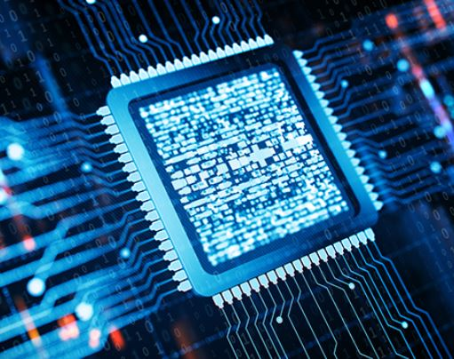

Active Courses
Digital Logic Design
|  | With technological advances that allow us to integrate complete multi-processor systems on a single die, Systems-on-Chip (SoCs) are at the core of most embedded computing and consumer devices, such as cell phones, media players and automotive, aerospace or medical electronics. This course will provide an understanding of the concepts, issues, and process of designing highly integrated SoCs following systematic hardware/software co-design & co-verification principles, especially about the low-power design techniques and methodologies for the lightweighted realization of the long-term operative embedded systems. |
Low-Power System-on-Chip Design
Digital Signal Processing (ELEC811)
 |
Digital Signal Processing begins with a discussion of the analysis and representation of discrete-time signal systems, including discrete-time convolution, difference equations, the z-transform, and the discrete-time Fourier transform. Emphasis is placed on the similarities and distinctions between discrete-time. The course proceeds to cover digital network and non-recursive (finite impulse response) digital filters. Digital Signal Processing concludes with digital filter design and a discussion of the fast Fourier transform algorithm for computation of the discrete Fourier transform. |
Mobile Embedded Processor Architecture (EECS201)
 |
All things around us will be programmable with Embedded Software. C Programming Language is widely used to program the hardware-intensive embedded systems in electronics engineering field. The main objective of this course is to learn to program software in C programming language, especially in electrical and electronics engineering field. The practical problem solving methods are covered through the entire course. |
Embedded System Design and Experiments (EECS201)
|
|
All things around us will be programmable with Embedded Software. C Programming Language is widely used to program the hardware-intensive embedded systems in electronics engineering field. The main objective of this course is to learn to program software in C programming language, especially in electrical and electronics engineering field. The practical problem solving methods are covered through the entire course. |
Software Architecture (EECS201)
|
|
All things around us will be programmable with Embedded Software. C Programming Language is widely used to program the hardware-intensive embedded systems in electronics engineering field. The main objective of this course is to learn to program software in C programming language, especially in electrical and electronics engineering field. The practical problem solving methods are covered through the entire course. |
Coding Theory (EECS201)
|
|
All things around us will be programmable with Embedded Software. C Programming Language is widely used to program the hardware-intensive embedded systems in electronics engineering field. The main objective of this course is to learn to program software in C programming language, especially in electrical and electronics engineering field. The practical problem solving methods are covered through the entire course. |
Lecture on ICT Special Issues (EECS201)
|
|
All things around us will be programmable with Embedded Software. C Programming Language is widely used to program the hardware-intensive embedded systems in electronics engineering field. The main objective of this course is to learn to program software in C programming language, especially in electrical and electronics engineering field. The practical problem solving methods are covered through the entire course. |
Basic Electronics Experiment and Design (EECS201)
|
|
All things around us will be programmable with Embedded Software. C Programming Language is widely used to program the hardware-intensive embedded systems in electronics engineering field. The main objective of this course is to learn to program software in C programming language, especially in electrical and electronics engineering field. The practical problem solving methods are covered through the entire course. |
Microprocessors (EECS201)
|
|
All things around us will be programmable with Embedded Software. C Programming Language is widely used to program the hardware-intensive embedded systems in electronics engineering field. The main objective of this course is to learn to program software in C programming language, especially in electrical and electronics engineering field. The practical problem solving methods are covered through the entire course. |
C Programming Experiments (EECS201)
|
|
All things around us will be programmable with Embedded Software. C Programming Language is widely used to program the hardware-intensive embedded systems in electronics engineering field. The main objective of this course is to learn to program software in C programming language, especially in electrical and electronics engineering field. The practical problem solving methods are covered through the entire course. |
Data Structure (ELEC811, Fall 2015)
|
|
Digital Signal Processing begins with a discussion of the analysis and representation of discrete-time signal systems, including discrete-time convolution, difference equations, the z-transform, and the discrete-time Fourier transform. Emphasis is placed on the similarities and distinctions between discrete-time. The course proceeds to cover digital network and non-recursive (finite impulse response) digital filters. Digital Signal Processing concludes with digital filter design and a discussion of the fast Fourier transform algorithm for computation of the discrete Fourier transform. |
Control Engineering (ELEC811, Fall 2015)
|
|
Digital Signal Processing begins with a discussion of the analysis and representation of discrete-time signal systems, including discrete-time convolution, difference equations, the z-transform, and the discrete-time Fourier transform. Emphasis is placed on the similarities and distinctions between discrete-time. The course proceeds to cover digital network and non-recursive (finite impulse response) digital filters. Digital Signal Processing concludes with digital filter design and a discussion of the fast Fourier transform algorithm for computation of the discrete Fourier transform. |
Past Courses
2024
Teaching Assistants: M. J. Kim, G. H. Jeon, H. J. Lee (KNU M.S)
Microprocessor Design
Industry-Academia Collaboration Project
Cross Development-based Embedded Programming
Embedded System Programming
Basic Electronics Engineering Seminar
2023
Teaching Assistants: H. J. Youn, S. H. Park (KNU Ph.D)
Logic Circuit Design
Embedded System Design and Experiments
Advanced Digital Signal Processing
C Programming Basics
Computer Operating Systems
2022
Sabbatical Year for Intensive Deep Research
Embedded C, MCU Programming and Projects in Intensive Software Course for Hyundai Motor
Embedded C Programming Basics for Hyundai Motor
Electronics Review and Automotive Electric Control Unit Understanding for Hyundai Motor
Advanced Embedded C Programming for Hyundai Motor
Embedded Linux System Programming for Hyundai Motor
2021
Teaching Assistants: Jisu Kwon (KNU Ph.D)
Mobile Embedded Processor Architecture (for Graduate Student)
Embedded System Design and Experiments (for Undergraduate Student)
Software Architecture (for Graduate Student)
C Programming Basics (for Undergraduate Student)
Digital Logic Design (Winter School)
2020
Teaching Assistants: Dongkyu Lee (KNU Ph.D)
C Programming Basics (for Undergraduate Student)
Advanced Digital Signal Processing (for Graduate Student)
Lecture on ICT Special Issues (for Graduate Student)
Digital Logic Design (Winter School)
2019
Teaching Assistants: Dongkyu Lee (KNU Ph.D.), Hyungyun Moon (KNU M.S.), Junho Kwak (KNU B.S.C.)
Basic Electronics Experiment and Design
Microprocessor Design
Lecture on ICT Special Issues (for Graduate Student)
Coding Theory (for Graduate Student)
2018
Teaching Assistants: Seongseop Kim (KNU M.S.), Dongkyu Lee (KNU Ph.D.), Hyungyun Moon (KNU M.S.), Junho Kwak (KNU B.S.C.)
Microprocessor (in English)
Basic Electronics Experiment and Design
Data Structure Design
Basic Electronics Experiment and Design
2017
Teaching Assistants: Seongseop Kim (KNU M.S.), Dongkyu Lee (KNU Ph.D.), Hyungyun Moon (KNU M.S.), Hyeongrae Kim (KNU Ph.D.), Seonyong Jeong (KAIST M.S)
Microprocessor
Microprocessor (in English)
Data Structure
Data Structure (in English)
2016
Teaching Assistants: Seongseop Kim (KNU M.S.), Seonyong Jeong (KAIST M.S), Dongkyu Lee (KNU Ph.D.), Daehyun Lee (Hyundai Autron), Howon Lee (Postech), Hyungyun Moon (KNU M.S.)
Microprocessor
Microprocessor design
C Programming Experiments
Data Structure Design (in English)
2015
Teaching Assistants: Hyunseo Cho (SK Telecom), Daehyun Lee (Hyundai Autron)
Data Structure and Algorithms for Electrical Engineering
Logic Circuit Design
2014
Advanced Control System Engineering for Medical Engineering